Your first step is to download the files you need for this project.
Download the following compressed file to your computer:software.zip
If a sub-folder named portfolio does not already exist inside your websites folder, create it now.
Uncompress the ZIP file into your websites/portfolio sub-folder as shown below.
This will create a sub-folder named software inside your portfolio folder.
The folders, sub-folders and files for this 'Software' project will be as shown below.
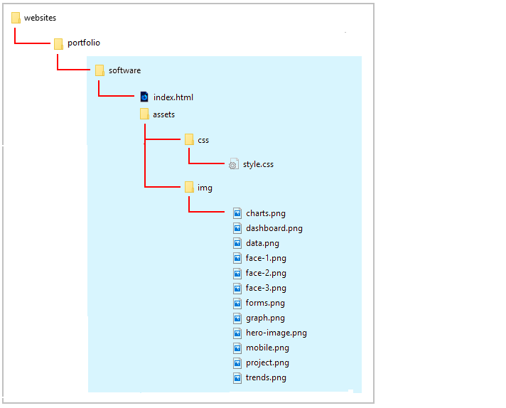
Start your text editor
Now you can begin to work with the files you have downloaded.
In Visual Studio Code or other text editor, open the following two downloaded files. The first is the web page; the second, the stylesheet:
index.html: You will find this in the main folder of your software folder.
style.css: You will find this in the assets/css/ sub-folder of the software folder.
You can close any other files you may have open in your text editor.
Start your web browser
As you work with the HTML and CSS files, you will want to be able to display in your web browser the results of the changes you will be making.
In File/Windows Explorer, go to your C:\\websites\portfolio\software sub-folder. There you can see the index.html web page for this project.
If your default web browser is Firefox Developer Edition or Google Chrome, double-click the index.html file to open it.
If not, right-click the index.html file and, from the pop-up menu displayed, choose Open with and then select either Firefox Developer Edition or Google Chrome to open the file.
In your web browser, the index.html web page will look like that below.
The basic structure of the web page is a follows.
There are nine 'parent' flexbox containers. All have the same class of flexbox-container.
The first flexbox container has two 'child' items inside it. Both children have the same class name of item-2. The container is located at the top of the web page and serves as the 'hero' block.
Three of the flexbox containers each have three 'child' items inside them. All these children have the same class name of item-3.
The other four parent containers each have just one 'child' item inside it. The class name of this single child is item-1.
To help you distinguish between the flexbox parent DIVs and the child DIVs, the following two styles are added at the end of the style.css stylesheet. You can remove these styles at the end of the project.
Before and after each of the nine parent flexbox containers is a set of three 'blank' or 'spacer' paragraphs. These are to help you see where one container ends and the next container starts.
As with the coloured borders, you can remove these blank paragraphs at the end of the project.
Add padding to the parent flexbox containers
Follow these steps to add spacing around the four inside edges (top, right, bottom and left) of the parent flexbox containers.
In the style.css file, add the padding values below for the .flexbox-container selector.
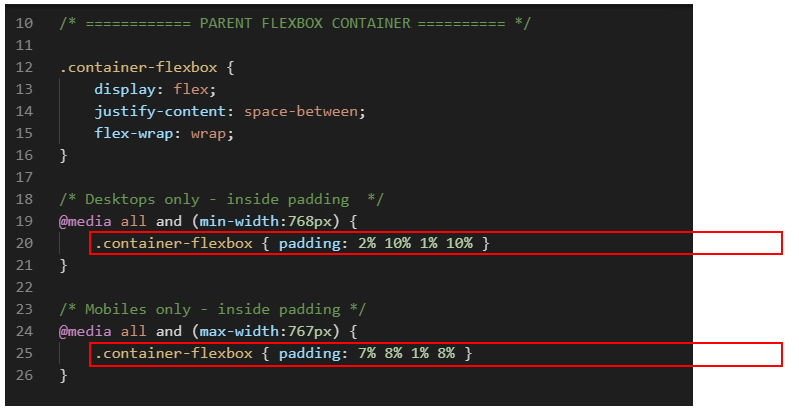
Save the style.css file, and, in your web browser, view the effect on your web page.
Add background colours to the parent flexbox containers
In the CSS file, you can see styles have been created for two background colour values.
Let's apply these to the parent flexbox containers in your web page.
Under the two-column 'hero' parent container at the top of the web page is a parent container with a single child column (.item-1) inside it. The text in the child column begins with the words "IBAT Analytics has been featured on..."
To this parent container, add the class name of bg-green.
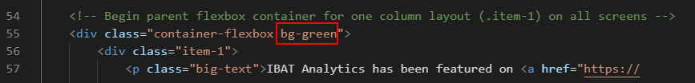
Further down the page is another parent container that contains just one child (item-1). Inside the child item is a single image named dashboard.png.
To this parent container, also add the class name of bg-green.
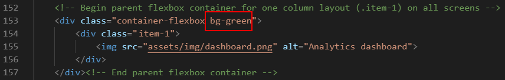
To all the other parent containers in the web page - except the 'hero' container at the top - add the class name of bg-light-gray.
Save the index.html file, and, in your web browser, view the effect on your web page.
You have now finished working with the parent flexbox containers. All your remaining changes will be to the child items inside the parent containers.
Style the single-column layouts
On both desktop and mobile screens, parent containers with an item-1 child will always display as a single column. Let's add some padding to these child items.
In your style.css stylesheet, add the following padding values for the .item-1 selector within all parent containers.
Save the style.css file, and, in your web browser, view the effect on your web page.
Style the two-column layouts
Only the 'hero' parent container at the top of the web page has a two-column .item-2 layout. On desktop screens, this two-column layout has no gutter spacing between the left and right child items. Let's change this.
In the style.css stylesheet, within the desktop media query for the .item-2 class selector, reduce the width from 50% to 45% as shown below.
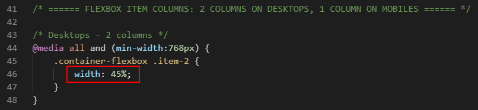
The remaining space of 10% will be added between the two child items, so creating a gutter between the left and right columns.
This applies only to desktop screens (768px or wider) and has no effect on mobile screens (767px or narrower).
Next, add the following padding values for the .item-2 columns.
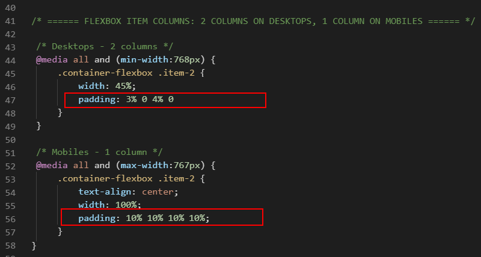
Save the style.css file, and, in your web browser, view the effect on your web page.
Style the three-column layouts
On desktop screens, the three-column layout has no gutter spacing between the child items. Let's change this.
In the style.css stylesheet, within the desktop media query for the .item-3 class selector, reduce the width from 33.33% to 30% as shown below.
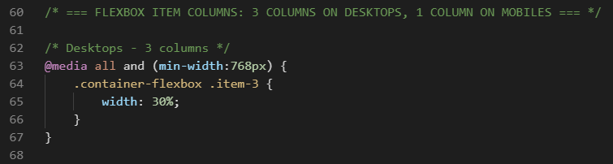
The remaining space of 10% will be added between the child items.
This applies only to desktop screens (768px or wider) and has no effect on mobile screens (767px or narrower).
Add the following alignment, padding and margin values for the .item-3 columns.
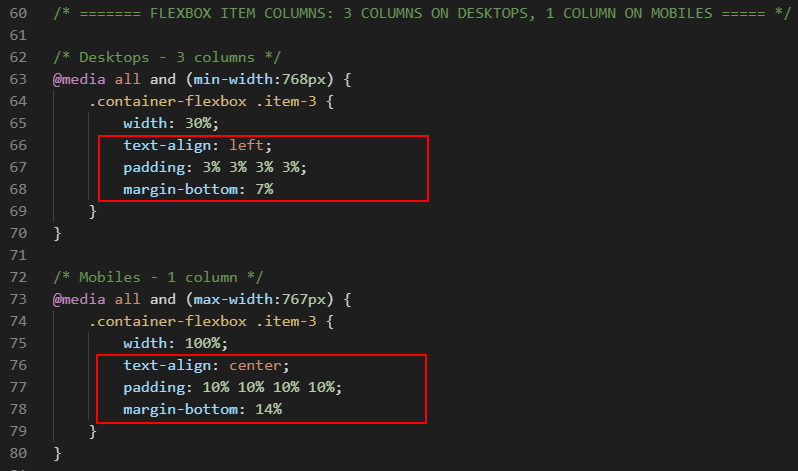
Create the following new styles that will apply to the .item-3 child items on both desktop and mobile screens. These rules set the background colour to white and add a shaded border with round edges.
Create the following new styles that will apply to all images within the .item-3 child items on both desktop and mobile screens. These rules add some spacing under each image and 'soften' the image corners.
Lastly, create the following new styles that will apply only to the .item-3 child items within the 'Happy users' section at the bottom of the web page.
The first set of style rules ensures the content of the child items is always centred, on both desktop and mobile screens. It also sets the spacing above and below the child items.
The second set of style rules applies only to images inside the .item-3 child items within the 'Happy users' section. It reduces the image widths to 80%, and centres the images so that the remaining space of 20% is assigned equally to the left and right of the images. The border-radius: 100% setting displays each image as a circle.
Save the style.css file, and, in your web browser, view the effect on your web page.
Re-order the hero flexbox items vertically on mobiles
Your next step is to re-order how the two .item-2 child items within the 'hero' section at the top of the web page are displayed on mobile screens.
If you display your web page on a mobile screen, you can see that:
The heading text appears first.
The image appears under the text.
Let's change this.
In the style.css stylesheet, for the .item-2 selector, go to the media query for mobiles and add the following two styles to reorder the .item-2 columns.
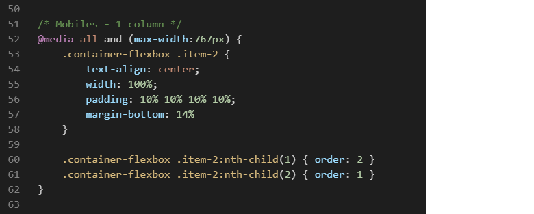
Save the style.css file, and, with your web browser reset for mobile screens, view the effect on your web page.
Update the meta tags
In the <head> of your index.html web page, within the <title> and <author> meta tags, you can see the name 'Mary Smith.'
Replace this with your own name, and save the index.html file.
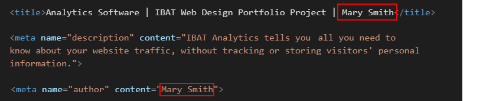
Update the Google Analytics ID
Near the top of your HTML file, just before the closing </head> tag, you can see a sample Google Analytics Tracking Code.
Each Google Tracking Code has a unique ID in its first and last line. Replace the sample Google Tracking ID with your own Google Tracking ID. The instructions for viewing your website’s unique Google Tracking ID are here.
When finished, save the index.html file.
Update the privacy pop-up code and message
You need to edit the ‘pop-up‘ privacy code and message to your web page.
Within the <head> at the top of your index.html file, you can see a link to the stylesheet for the privacy pop-up message.
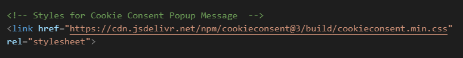
At the bottom of your web page, just before the closing </body> tag, you can see the JavaScript code for the privacy pop-up message.
Near the bottom of the JavaScript code, you can see the web address of the privacy page. Change this to the web address of your privacy page.
When finished, save the index.html file.
The Privacy Code and Message
You can find the instructions for generating the JavaScript code here.
You can click this link to view a sample template file with the privacy message and code.
Open this privacy-template.html file in your web browser.
The web page looks 'empty'. Right-click anywhere on the page and choose View page source (Chrome or Mozilla Firefox).
Copy-and-paste the CSS link to the <head> of your web page and
Copy-and-paste the Javascript code to just before the closing </body> tag of your web page.
Don't forget to change the web address used in the sample template file to the address of your own website.
Remove the visual layout guides
You can now delete the visual layout aids from your web page and stylesheet.
Within your index.html file, delete the sets of three blank paragraphs before and after the parent flexbox containers.
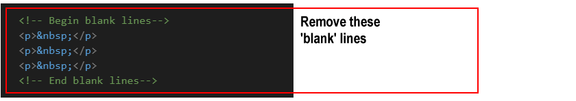
At the bottom of your style.css file, delete the style for coloured borders around the parent containers and child items.
When finished, save your index.html and style.css files.
Adjust vertical spacing on desktop screens
After removing the coloured lines and blank 'spacer' paragraphs, scroll down the web page in your web browser to check the spacing between the various elements looks correct.
On desktop screens, you can see that the vertical spacing after the 'How you benefit' section and before the large screen image with a green background looks correct.
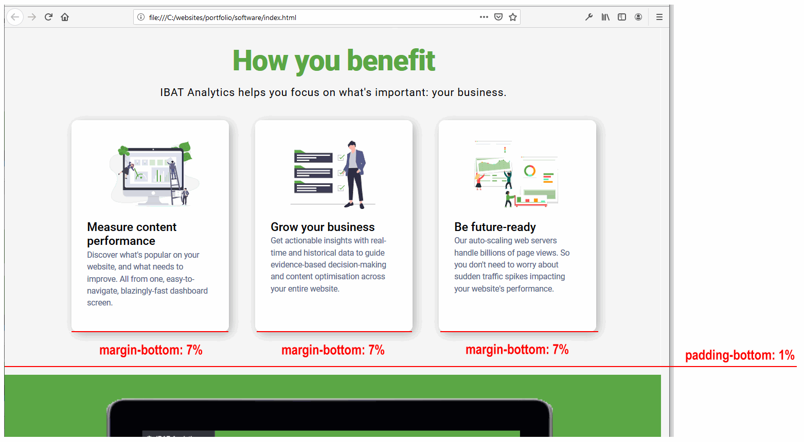
However, you can also see that there is too much vertical spacing after the 'What we offer' section and before the 'How you benefit' section.
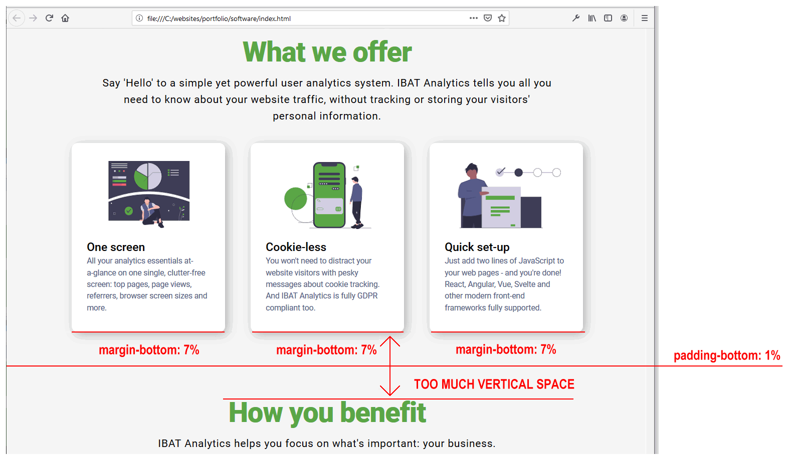
The extra spacing is caused by the margin-bottom of 7% value on the item-3 columns.
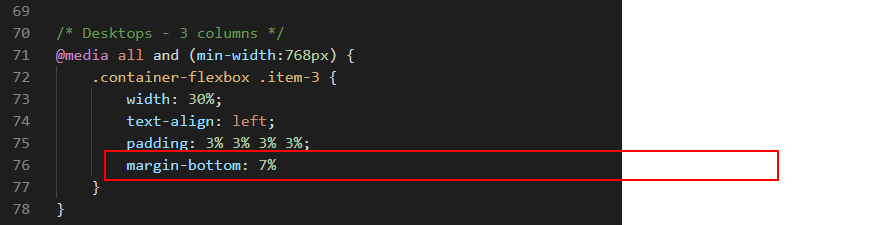
Let's fix these by:
Creating a new style in the CSS file that has a smaller margin-bottom value.
Adding this new style to the three item-3 columns in the 'What we offer' section only.
In the style.css file, add the following new style within the media query for desktops screens.
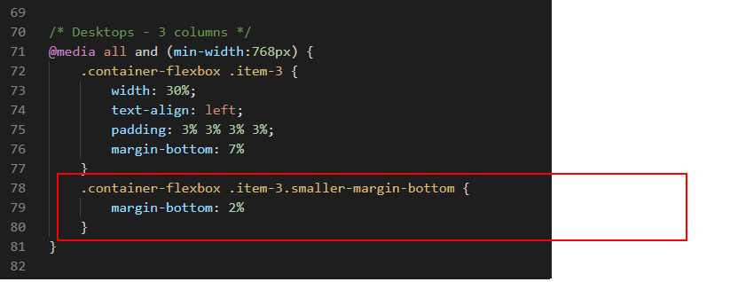
In the index.html file, add the new style to the three item-3 columns in the 'What we offer' section
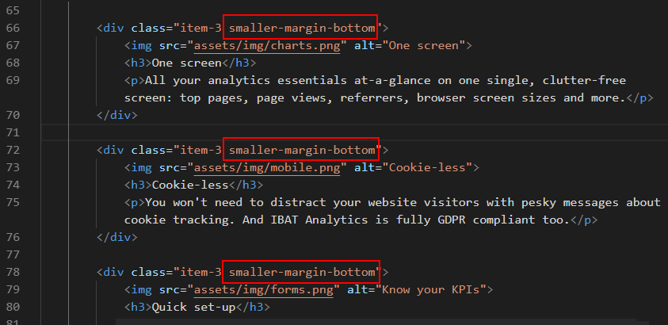
When finished, save your index.html and style.css files.
You can now see that the vertical spacing after the 'What we offer' section and before the 'How you benefit' section looks much better.
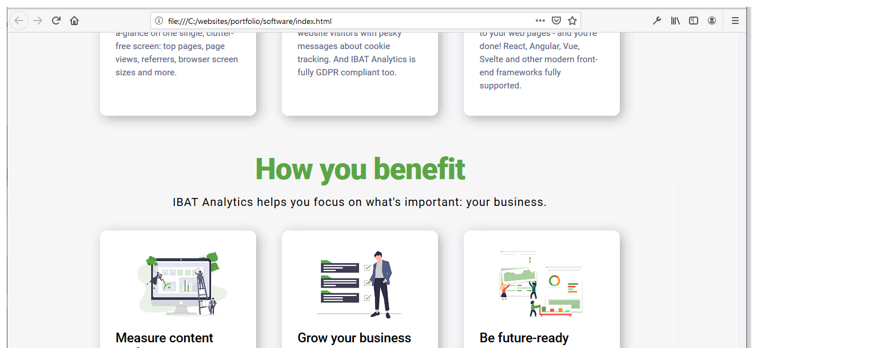
Validate your HTML file
To check your HTML is correct, use the official W3C Markup Validation Service. Follow these steps.
Copy and paste your HTML file into the box named Enter the Markup to validate.
Click the Check button.
If you see any errors, return to your index.html file, fix the errors, save the file, and copy the entire file again.
In the HTML Validator, click the Back button of your web browser to again display the Validate by Direct Input tab. Click once in the tab and paste in your corrected HTML file. Your new, pasted-in file will replace the earlier version. Finally, click the Check button.
Validate your CSS file
To check your CSS is correct, use the official W3C CSS Validation Service. Follow these steps.
Copy and paste your CSS file into the box named Enter the CSS you would like validated.
Click the Check button.
If you see any errors (other than those related to the fluid typographic equation, as shown below), return to your style.css file in your text editor, fix the errors, save the file, and copy the entire file again.
In the CSS Validator, click the Back button of your web browser to again display the By direct input tab. Click once in the tab and paste in your corrected CSS file. Your new, pasted-in file will replace the earlier version. Finally, click the Check button.
Upload your project to GitHub
The final step is to upload your project to GitHub.
All the files for this project are in a sub-folder named software of your websites/portfolio folder.
So you will need to upload this software sub-folder, which contains both files and other sub-folders, to your account on GitHub.
Open a new tab in your web browser and go to GitHub.com. If you are not already signed in to your GitHub account, sign in now.
On your GitHub home page, click the name of the repository ('repo') that holds your web pages. Its name will look as follows, where username is your chosen username on GitHub.
username.github.io
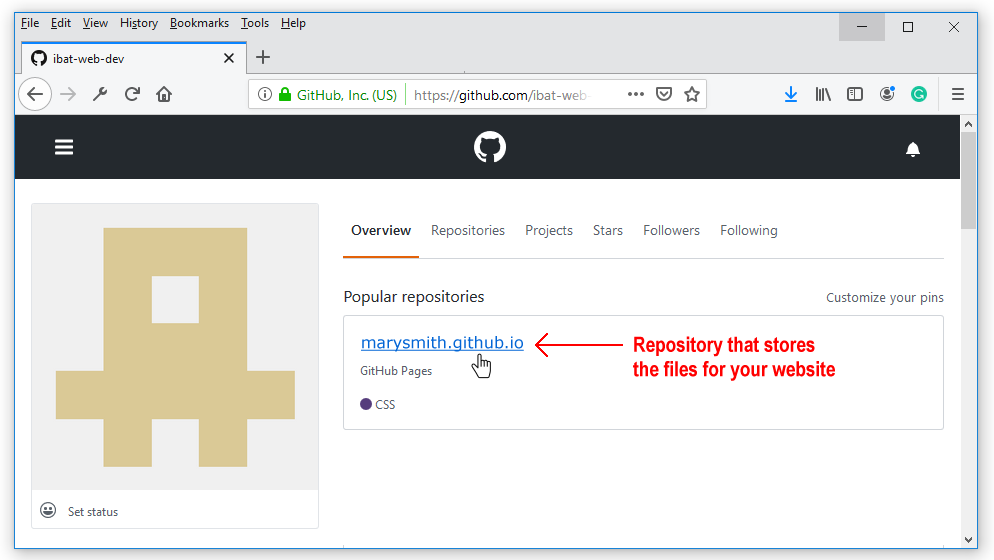
The next GitHub screen displayed should look as follows. Click on the portfolio folder.
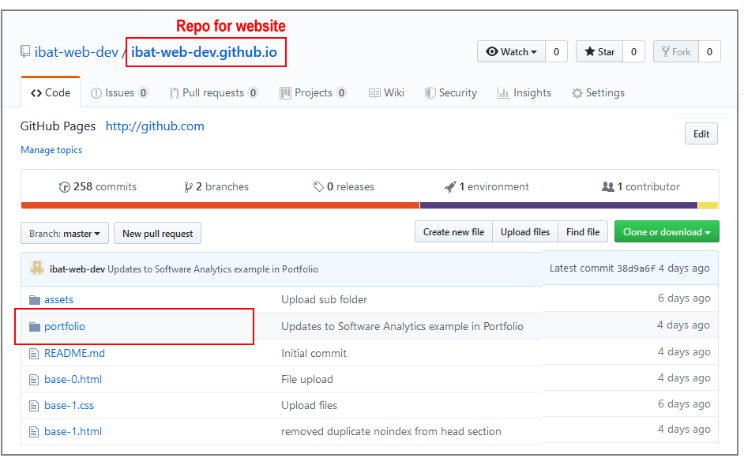
On the next screen displayed, click the Upload files button.
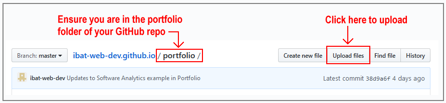
In File/Windows Explorer on your computer, display your portfolio folder and then drag-and-drop the software folder to the GitHub tab in your web browser.
After uploading the software folder, scroll down to the bottom of the GitHub screen, enter a short message in the Commit changes box, click the Commit changes button, and wait for the upload to complete.
The portfolio folder of your website repo on GitHub should now contain a folder named software. Click on this folder.
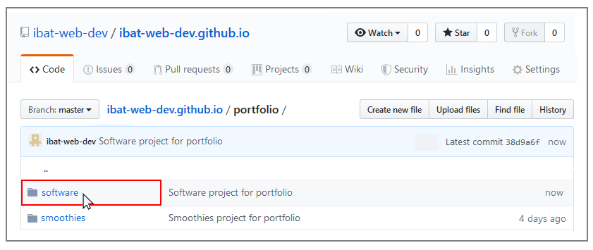
The software folder should contain both the index.html file and the assets sub-folder.
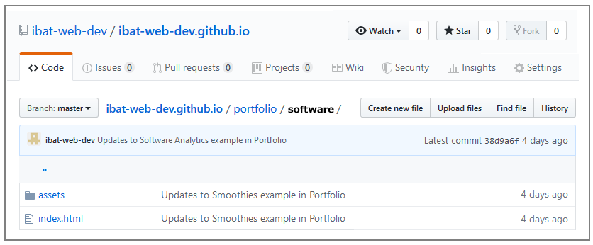
Click on the assets sub-folder to view its contents. You should see that it contains the two sub-folders named css and img.
Within the assets sub-folder, click on the css sub-folder. Check that it contains the stylesheet file.
Within the assets sub-folder, click on the img sub-folder. Check that it contains all the image files.
Your web page is now published on GitHub at a web address similar to the following, where username is the username you have chosen for your GitHub account:


 If not, right-click the index.html file and, from the pop-up menu displayed, choose Open with and then select either Firefox Developer Edition or Google Chrome to open the file.
If not, right-click the index.html file and, from the pop-up menu displayed, choose Open with and then select either Firefox Developer Edition or Google Chrome to open the file.


 Near the bottom of the JavaScript code, you can see the web address of the privacy page. Change this to the web address of your privacy page.
Near the bottom of the JavaScript code, you can see the web address of the privacy page. Change this to the web address of your privacy page.